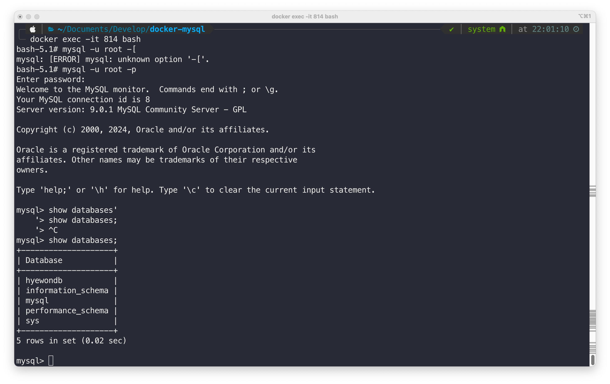
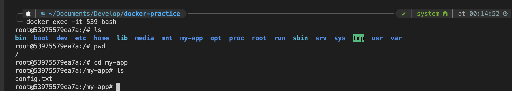
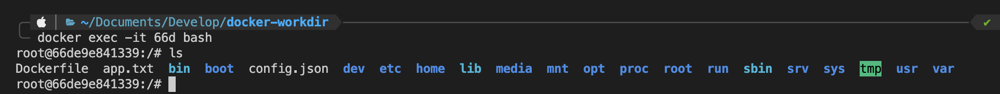
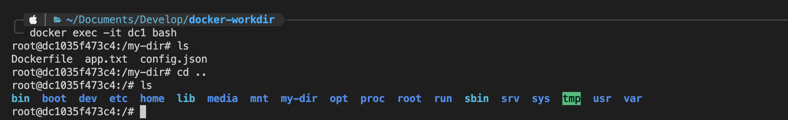

Docker 기본
비전공자도 이해할 수 있는 Docker 입문/실전
✅ Docker CLI 익히기
중단된 컨테이너 한번에 삭제
실행되고 있는 컨테이너 중단 + 제거 한번에 하기 도커 컨테이너는 실행되고 있는 상태에서는 지울 수 없다. (꼭 중단 시키고 제거해야됨)
docker run
- 도커 이미지 다운로드(pull) 받아서 컨테이너 생성(create)
- create만 해도 이미지가 없다면 알아서 docker hub로 부터 이미지를 pull받은 후 컨테이너를 생성한다.
- 컨테이너 실행(start)
포그라운드 백그라운드
✅ 컨테이너에서 발생하는 로그 확인
로그 확인
로그 마지막 10줄 확인
실시간으로 생성되는 로그 확인
✅ 실행중인 컨테이너 내부 환경에 접속하는 방법

다시 내 PC 환경(host os)으로 나오기
예제 redis 실행해보기

-
docker hub에서 redis 이미지 검색해보기
-
도커 이미지 다운 + 컨테이너 생성 + 컨테이너 실행
- 이미지 확인
- 컨테이너 확인
- 로그 확인
-
레디스 컨테이너 접근
-
레디스에 직접 접근
-
이미지 삭제, 컨테이너 삭제
✅ Docker Volume(도커 볼륨)
- 도커 이미지를 변경하고싶을 때 이미지를 수정하는 것 보다 새로 만드는 것이 효율적이라고 생각했다
- 하지만 기존 컨테이너 내부에 있던 데이터가 같이 삭제된다. 이렇게 컨테이너 내부에 저장된 데이터가 삭제되면 안되는 경우에 Volume 라는 개념을 활용하게 된다.
- 새로 만들어지는 컨테이너의 자체 저장공간을 사용하지 않고, 호스트 자체 저장공간을 공유해서 사용하는 방식이다.
🍀 [실습] Docker로 MySQL 실행시켜보기 - 1
-
MySQL 이미지를 바탕으로 컨테이너 실행시키기
-
mysql 포트가 이미 사용중이라는 에러가 뜬다.
-
해당 포트가 어디에 사용되고 있는지 확인하고 kill
- docker run 잘 됨!

-
docker ps 했는데, 컨테이너가 없음
- 에러가 발생했다는 것을 유추할 수 있다.
- 우선 로그를 확인한다.
✔️ 에러내용 : 패스워드 옵션이 정의되지 않아서 db가 시작을 못했다
-
-e: 환경변수 설정e MYSQL_ROOT_PASSWORD=password123: -e 옵션은 컨테이너의 환경 변수를 설정하는 옵션이다.- Dockerhub의 MySQL 공식 문서를 보면 환경 변수로 MYSQL_ROOT_PASSWORD를 정해주어야만 정상적으로 컨테이너가 실행된다고 적혀져있다.
- 환경변수가 컨테이너 내에서 잘 설정 되어있는지 확인하기.

워크벤치, 디비버 등으로 확인할 수 있다.
💡 볼륨을 사용하지 않으면 컨테이너 삭제 후 다시 띄웠을 때 데이터가 사라진다.
-
mysql에 접속해서 hyewondb 데이터베이스 생성하기
-
mysql 컨테이너 다시 생성 -> hyewondb 사라져 있음
📌 위 방식은 볼륨(Volume)을 활용하지 않고 MySQL 컨테이너를 띄웠다. 그래서 MySQL 컨테이너를 삭제함과 동시에 MySQL 내부에 저장되어 있던 데이터도 함께 삭제되어 없어졌다. 이를 방지하기 위해 볼륨(Volume)을 활용해 MySQL 컨테이너를 띄우는 방식에 대해 알아볼 것이다.
💡 볼륨 사용하여 mysql 띄우기
-
MySQL 컨테이너 띄우기
cd /Users/hyewon/Documents/Develop mkdir docker-mysql # MySQL 데이터를 저장하고 싶은 폴더 만들기 # docker run -e MYSQL_ROOT_PASSWORD=password123 -p 3306:3306 -v {호스트의 절대경로}/mysql_data:/var/lib/mysql -d mysql docker run -e MYSQL_ROOT_PASSWORD=pass123# -d -p 3306:3306 -v /Users/hyewon/Documents/Develop/docker-mysql/mysql_data:/var/lib/mysql mysql- DB에 관련된 데이터가 저장되는 곳이 /var/lib/mysql인지는 Dockerhub MySQL의 공식 문서에 나와있다.

-
MySQL 컨테이너에 접속해서 데이터베이스 만들기
-
컨테이너 종료 후 다시 생성해보기
# 컨테이너 종료 $ docker stop [MySQL 컨테이너 ID] $ docker rm [MySQL 컨테이너 ID] # 컨테이너 생성 $ docker run -e MYSQL_ROOT_PASSWORD=pass123! -p 3306:3306 -v /Users/hyewon/Documents/Develop/docker-mysql/mysql_data:/var/lib/mysql -d mysql $ docker exec -it [MySQL 컨테이너 ID] bash $ mysql -u root -p mysql> show databases;-
아까 생성한 데이터베이스가 새로 생성한 컨테이너에서도 존재한다.

-
🤔 비밀번호를 바꿔서 컨테이너를 생성하면 어떻게 될까?
# 컨테이너 종료
$ docker stop [MySQL 컨테이너 ID]
$ docker rm [MySQL 컨테이너 ID]
# 컨테이너 생성
$ docker run -e MYSQL_ROOT_PASSWORD=change123! -p 3306:3306 -v /Users/hyewon/Documents/Develop/docker-mysql/mysql_data:/var/lib/mysql -d mysql
$ docker exec -it [MySQL 컨테이너 ID] bash
# 접속 안됨 🚨
- 접속이 안되는 이유?
- 처음 환경변수 설정 시 Volume으로 설정해둔 폴더에 이미 비밀번호 정보가 저장되버렸기 때문이다.
- 아예 mysql_data를 지우고 다시 mysql을 띄우면 된다.
- rm -rf -mysql_data
- 볼륨의 특성이다.
🤔 볼룸의 경로를 잘못 작성한다면?
🚨 주의) mysql_data 디렉토리를 미리 만들어 놓으면 안 된다. 그래야 처음 이미지를 실행시킬 때 mysql 내부에 있는 /var/lib/mysql 파일들을 호스트 컴퓨터로 공유받을 수 있다. mysql_data 디렉토리를 미리 만들어놓을 경우, 기존 컨테이너의 /var/lib/mysql 파일들을 전부 삭제한 뒤에 mysql_data로 덮어씌워 버린다.
-
mysql_data 파일을 생성하고, aaa.txt 작성

- docker ps 결과 컨테이너가 생성이 안됨
- 에러 발생 : [Server] --initialize specified but the data directory has files in it. Aborting.
- ✔️ [호스트의 디렉토리 절대 경로]에 디렉토리가 이미 존재할 경우, 호스트의 디렉터리가 컨테이너의 디렉터리를 덮어씌운다.
-
mysql_data 파일 지우고, 컨테이너 다시 생성
- 컨테이너 생성완료
- ✔️ [호스트의 디렉토리 절대 경로]에 디렉토리가 존재하지 않을 경우, 호스트의 디렉터리 절대 경로에 디렉터리를 새로 만들고 컨테이너의 디렉터리에 있는 파일들을 호스트의 디렉터리로 복사해온다.
-
컨테이너 내에서의 파일과, 볼륨의 파일이 완전하게 일치한다.
- 즉 호스트에서 파일을 추가하면 컨테이너에서도 추가된 파일을 볼 수있다.

- 즉 호스트에서 파일을 추가하면 컨테이너에서도 추가된 파일을 볼 수있다.
✅ Dockerfile
- 우리가 도커 이미지를 다운 받을 수 있는 이유는, 누군가가 dockerfile로 docker image를 만들어 docker hub에 올린 것이다.
- 우선 Dockerfile 문법에 대해서 알아보자
1. FROM
- 베이스 이미지 생성
- 특정 초기 이미지
-t: tag- 상대경로로 작성하니까 해당 위치로 들어와있어야 함

실행 되었다가 종료 되었다고 뜸. 이유는 도커 파일에 작성된 작업이 모두 끝나면 컨테이너가 저절로 종료가 된다.
docker build -t my-jdk17-server .
docker build -t [원하는 도커 이미지 이름] [도커파일 경로]
docker run -d my-jdk17-server
docker exec -it c98 bash # 실행중인 컨테이너이기 때문에 가능
bash-4.4# java -version # jdk 깔려있는지 버전 확인

😎 👀 종료된 컨테이너에서 디버깅하고 싶다면?
지금까지는 아래 2가지 방법을 사용했다.
1. docker logs
2. docker exec -it [컨테이너 ID] bash
3. 실행중인 컨테이너로 만들기 위해 dockerfile에 `ENTRYPOINT [ "/bin/bash", "-c", "sleep 500" ]` 추가.(디버깅 하기 위함)
```bash
FROM openjdk:17-jdk
ENTRYPOINT ["/bin/bash", "-c", "sleep 500"] # 500초 동안 시스템을 일시정지 시키는 명령어
```
2. COPY
- 파일 복사(이동)
- 호스트 컴퓨터에있는 파일을 복사해서 컨테이너로 전달
- 호스트 -> 컨테이너
-
문법
1️⃣ 파일 복사해보기
- app.txt 파일 만들기
-
Dockerfile 만들어서 이미지 생성 및 컨테이너 실행
2️⃣ 폴더 안에있는 모든 파일 복사하기
- my-app 디렉터리 만들기, my-app 디렉터리 안에 파일 만들기
-
Dockerfile 만들어서 이미지 생성 및 컨테이너 실행

3️⃣ 와일드 카드 사용해보기
-
app.txt,readme.txt파일 2개 만들기 -
Dockerfile 만들어서 이미지 생성 및 컨테이너 실행
4️⃣ .dockerignore 사용해보기
- 특정 파일 또는 폴더만 COPY를 하고 싶지 않을 수 있다. 그럴 때 .dockerignore를 활용한다.
- .dockerignore 파일 만들기
-
Dockerfile 만들어서 이미지 생성 및 컨테이너 실행

3. ENTRYPOINT
- 컨테이너가 시작할 때 실행되는 명령어를 ENTRYPOINT에 작성한다.
-
사용법
-
예제

🍀 [실습] 백엔드 프로젝트(Spring Boot) 프로젝트를 Docker로 실행시키기
- spring 프로젝트 셋팅
-
간단한 코드 작성
- AppController
-
Dockerfile 작성하기
-
Spring Boot 프로젝트 빌드하기
-
Dockerfile을 바탕으로 이미지 빌드하기
-
이미지가 잘 생성됐는 지 확인하기
-
생성한 이미지를 컨테이너로 실행시켜보기
-
컨테이너 잘 실행되고 있는 지 확인하기
-
localhost:8080으로 들어가보기
-
실행시킨 컨테이너 중지 / 삭제하기, 이미지 삭제하기
4. RUN
- 이미지를 생성하는 과정에서 사용할 명령문 실행
- ⭐️ RUN은 ‘이미지 생성 과정’에서 필요한 명령어를 실행시킬 때 사용하고, ENTRYPOINT는 생성된 이미지를 기반으로 컨테이너를 생성한 직후에 명령어를 실행시킬 때 사용한다.
-
사용법
-
예제 가정 : git, ubuntu가 함께 깔려있으면 좋겠다
$ docker build -t my-server . $ docker run -d my-server $ docker exec -it [Container ID] bash $ git -v # 컨테이너 내에 git이 잘 설치됐는 지 확인
5. WORKDIR
- 작업 디렉토리를 지정한다.
- 컨테이너 내부에 존재하던 기존파일들과 분리하여 폴더를 깔끔하기 관리하기 위함이다.
-
사용법
-
예제 : WORKDIR을 안 썼을 때 파일 구성 보기

-
예제 : WORKDIR을 썼을 때 파일 구성 보기

6. EXPOSE
- 컨테이너 내부에서 사용 중인 포트를 문서화하기
- 없어도 작동하기 떄문에 문서화 라고 한다.
-
사용법